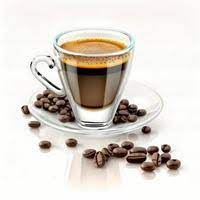
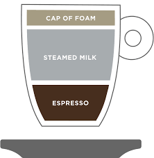

there are 2 main coffee beans where people get their coffee from
(at least according to Nespresso)
there are many ways to consume coffee, here are a few popular options
many ways to brew it, most involve finely ground coffee beans with very hot pressurized water passing through it, defined by its "crema"
an Espresso topped with frothed milk, mostly sold in coffee shops
now that you're a bit more familiar with coffee, tell us about your coffee likes and dislikes